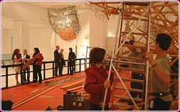
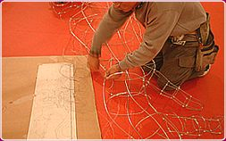
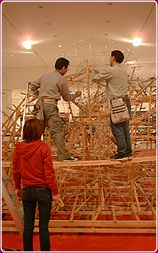
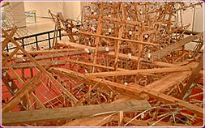
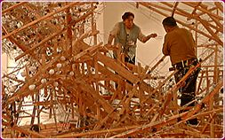
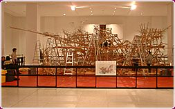
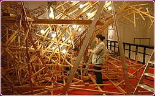

|
Archive diary Week 2 Thursday 22 November 2001 'It looks like a modern art installation', said one visitor today about the wood and wire structure which is now more or less complete. The Kitamura brothers and Max Marshall are finalising details around the front of the float, constructing further waves out of which the warrior and horse appear to emerge. Each wave is first shaped on the floor with an outline of wire and then given a sculptural three-dimensional form which will stand on end. The overall form of the water along the front of the float is given particular attention: although a structurally simple wire grid, the curve of the wave and of the water beneath is what will partly define the dynamism of the scene. Planning for later stages is constantly in the mind of the artist: some of the waves are made on separate wooden bases that can be moved out of the way to facilitate access for the electrics to be installed and the structure covered with paper. They will be moved back in towards the centre of the float and attached to it once these later stages have taken place.
|
 |
|
Friday 23 November 2001 Today is the first time the design for the back of the float was revealed. Some of the wire parts for the back had been made by Takashi Kitamura in advance in Japan and were laid on the floor of the gallery until today: a head, two arms, a number of shapes of buds and long ribbons. These parts had suggested this would be a Buddhist scene and suddenly today, the head and arms were raised and a figure emerged sitting on a lotus flower. The presence of only one foot which so many visitors had queried when looking at the wire parts was finally explained by the fact that the other foot remains hidden under the robes of the figure. Sitting at the back of the float, the figure now looks straight into the eyes of another Buddhist figure in the Oriental Galleries, through the door of the Wellcome Trust Gallery and beyond the stairs. Meanwhile, Mr and Mrs Funahashi continue to thread electrical wires through the details of the figure and horse at the front of the float and gradually screwing the bulbs into place.
|
 |
|
Saturday 24 November 2001 Today Akira and Takashi Kitamura worked alone on completing the back of the float while Maki Fujiwara helped strengthen the main base of the structure. The design for the back of the float echoes the front through the large expanse of water and tall waves on which the seated figure floats. Takashi Kitamura's sketch for the back was brought out again and careful measurements made to establish the length of the waves, crucial in maintaining the overall proportions of the entire float. However, their shape was entirely decided upon by eye. A book containing reproductions of famous Buddhist paintings was also consulted to confirm details of the folds of the figure's robes. One of the questions visitors most frequently ask is 'Where are the plans?'. Looking at the small sketch in front of Kitamura as he stands back to assess positioning of yet another detail, it is difficult for some to appreciate just how much of the construction process is done by eye. The five women who will cover the structure in paper have arrived this afternoon, thus completing the team.
|

|
|
Sunday 25 November 2001 Work has started on installing the lights in the horse. First the head is given some lightbulbs, then the legs and finally its wings and neck. Although all the lightbulbs in this part of the float look the same, large and milky white in colour, they are often of a different wattage depending on the overall effect sought after by the artist and electrician working together. Most of today was spent tidying up the wire structure, either where details join together, such as between head and neck of the figure at the back, or between the upper wire structure and the wooden base to which it is attached. This is particularly important in anticipation of the papering work which will need to join the two (the top and the base) in seamless fashion so that every single part of the wood or wire structure is covered. Finally, towards the end of the afternoon, there was an overall sense of completion with Minamoto no Yoshitsune and his horse and the back scene fully constructed. While the electrical team continued to work at their measured pace, Takashi and Akira Kitamura began to prepare the area for when the women would start working on Tuesday. Standing back, they assessed the placement of the scaffold equipment, positioning the stepladders and laying and fixing the boards between them. By the end of the day, a complex walkway of boards had been created around and between the human figure and the horse at the front of the float. A gap between the back and front of the float is wide enough to allow access to the team and will be narrowed at the end when the completed sections of the float are joined together.
|
 |
|
Monday 26 November 2001 With
everything in place for papering to start, the artistic team have
taken a day off and will return to work tomorrow. Only Katsutoshi
and Michiko Funahashi continue to work, patiently installing the
hundreds of light bulbs. Indeed, the electrical wiring needs to
be fully in place before the structure can be covered with paper.
The complexity of the design creates a new challenge for their work:
rather than large wide expanses in the central area of the float,
Takashi Kitamura's design here includes manyfine details, all of
which need illuminating: arms, fingers, details of the warrior's
armour; not just expanses of water but complex waves rising from
the base and exploding into countless numbers extremities to create
the spume at the top of the wave. As in the case of the wire parts,
some preparations for the electrical work were carried out in Japan
prior to the team's arrival in London. For example, each socket
arrives equiped with wire twisted round it so that it can be immediately
attached to the wood and wire frame. Focusing on one detail of the
structure at a time, each socket is placed and attached with its
wires hanging down. A longer central cable is then made to run between
the sockets, each wire connected to it as the work progresse. Finally,
the bulbs themselves are put in place. Michiko Funahashi keeps a
careful record of the numbers of bulbs and their strength to monitor
the composition of each separate circuit. While the Kitamura brothers,
Max Marshall and Maki Fujiwara had been mainly working from the
outside of the structure, Katsutoshi and Michiko Funahashi have
been working more and more from the inside as the complexity of
the wiring moves away from the edges of the float and gather towards
the floor level at the centre.
|
 |
|
Tuesday 27 November 2001 This is the first day for the full team to be at work. The five women have now joined the work force and will be primarily responsible for covering the wire structure with paper. The first part of the morning consisted in getting their equipment ready: aprons (to protect their clothes from the PVA glue and water), plastic cups in which to put the glue, toothbrushes which will serve to apply the glue along the wire, a small cutter to neatly cut the paper along the lines of the wire, scissors to tidy up the edges and a damp rag on which to wipe fingers and tools. A clever hook made of wire is designed to hold the plastic cup so that it can be hung on the nebuta at a convenient height for dipping in the brush and moved along as work progresses. Finally, each person is provided with a plastic bag, also tied to the wire structure of the nebuta, so that all unused paper can be thrown immediately rather than left to litter the floor or the scaffold boards. Work started on the head of the main figure, Tomoko Kitamura and Miyuki Oda concentrating on the front of the helmet while Reiko Kitamura, Keiko Osanai and Tokuko Iwasaki worked on the top and sides of the helmet. Meanwhile, less experienced members of the team were set to work on parts of the nebuta which will ultimately be less visible to the public. Takashi and Akira Kitamura and Max Marshall spent most of the morning and early afternoon constructing boxes out of wood. These will be used ultimately to decorate the platform on which the nebuta will stand. Referred to as 'sponsor boxes', these play an important role in acknowledging the larger groups and companies that have contributed to the construction of the float. But at the end of the day, they joined in the papering. Bar Mr and Mrs Funahashi, still concentrating on the electrics, the entire team is now involved in covering the nebuta in paper.
|
 |
|
Wednesday 28 November 2001 Katsutoshi Funahashi is preparing the first fuse board for part of the electrical circuit and finalising the installation of neon bars in the spume of the waves. The front of the float is now more or less completely installed with light bulbs and the horse is occasionally fully lit, to the delight of passing visitors. Meanwhile, the papering continues. This is one of the longest stages of the construction process: every single space in the wire grid forming the outer structure of the nebuta is covered with an individual piece of paper cut to size. First a piece of paper is measured to fit approximately the space between the wires. Then the glue is applied along the wire with the toothbrush. The paper is carefully placed over the area, stretched by applying pressure on the highest points so that the paper will curve out. The edges are then tidied up with the cutter or scissors and stuck down by a last application of glue with one finger. Work on the head of the main figure continues, with the paper now spreading from the helmet onto the shoulders and other parts of the armour. The men are mainly working on the horse's wings while part of a thigh and a foot are also beginning to look more shapely now that the paper defnes the wire form in bold white patches. The face will be left until last and receive particular care: 'It is a great honour to be invited to apply paper to the face' mentioned Maki Fujiwara. |
 |